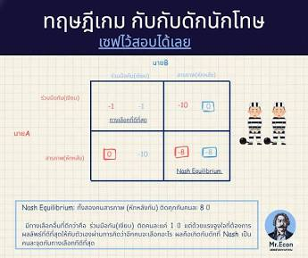

วิชาวิทยาศาสตร์

ปรากฏการณ์พัวพันเชิงควอนตัม (Quantum Entanglement) เป็นหนึ่งในปรากฏการณ์ที่แปลกประหลาดที่สุดของฟิสิกส์ควอนตัม เมื่ออนุภาคสองตัวเกิดการพัวพันกัน การวัดสถานะของอนุภาคหนึ่งจะทำให้ทราบสถานะของอีกอนุภาคหนึ่งได้ในทันที แม้ทั้งสองจะอยู่ห่างกันคนละฟากของจักรวาลก็ตาม อัลเบิร์ต ไอน์สไตน์เคยเรียกปรากฏการณ์นี้ว่า "การกระทำที่น่าขนลุกในระยะไกล" เพราะดูเหมือนจะขัดกับทฤษฎีสัมพัทธภาพที่ระบุว่าไม่มีสิ่งใดเดินทางเร็วกว่าแสง ปัจจุบันนักวิทยาศาสตร์นำหลักการพัวพันควอนตัมมาพัฒนาเทคโนโลยีคอมพิวเตอร์ควอนตัมและการเข้ารหัสลับเชิงควอนตัมที่มีความปลอดภัยสูงอย่างที่ระบบคอมพิวเตอร์ทั่วไปไม่สามารถเทียบได้